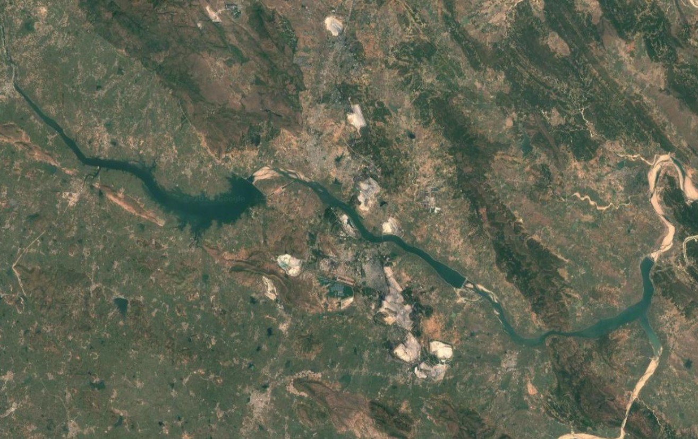
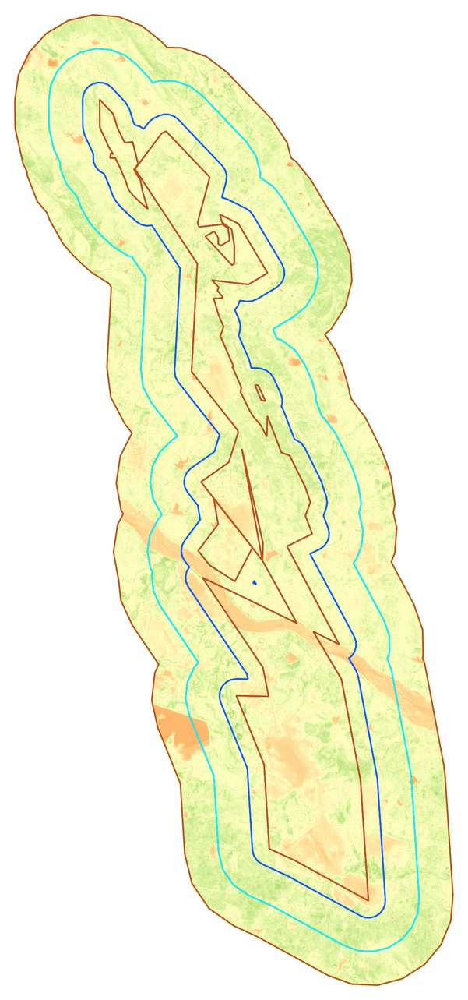

Chapter 2
Study area
Nine leases on the Godavari valley coalfield, from Ramagundam (Godavarikhani) in the south to Mandamarri in the north.
Singareni Collieries Company Limited (SCCL) is jointly owned by the Government of Telangana and the Government of India. It mines a belt of Gondwana coal along the Godavari and Pranhita rivers. Over the study period its output moved from underground to opencast mines: opencast mines produced 63% of SCCL coal in 2004–05 and 93% in 2024–25.
The study area lies in Peddapalli and Mancherial districts, on both banks of the Godavari. In the satellite view below, the grey patches are opencast pits and overburden dumps, and the river runs east to west across the middle.

Selected leases
The leases were taken from the SCCL lease boundary layer supplied by the Telangana State Remote Sensing Applications Centre (TGRAC) and reprojected to WGS 84 / UTM zone 44N (EPSG:32644). Together they run about 47 km north to south and 16 km east to west. The dissolved polygons cover about 176.6 km².
| Lease | Area code | Extent (ha) | Lease period |
|---|---|---|---|
| Third Renewal of South Godavari ML | 6,848.00 | 01.01.2015 to 31.12.2034 | |
| Third Renewal of North Godavari ML | MMR | 4,494.00 | 09.12.2009 to 08.12.2039 |
| First Renewal of Indaram ML | SRP | 2,100.00 | 24.07.2000 to 23.07.2020 |
| First Renewal of South Godavari ML | 1,554.00 | 17.09.2005 to 16.09.2025 | |
| Srirampur Mining Lease | SRP | 938.85 | 28.06.2008 to 27.06.2038 |
| Srirampur Extension ML | SRP | 714.90 | 12.03.2008 to 11.03.2033 |
| Kasipet ML | MMR | 356.00 | 22.01.2009 to 21.01.2039 |
| Kasipet North Extension Block ML | MMR | 206.00 | 22.01.2009 to 21.01.2039 |
| Indaram Extension ML | SRP | 199.88 | 09.12.2009 to 08.12.2039 |
| Total | 17,411.63 |
Distance zones
Buffers of 1, 3 and 5 km were drawn around the dissolved leases in QGIS to compare land at different distances from the mines.
- 0–1 km zone (about 315 km²): the full 1 km buffer. It contains the leases themselves, so it holds the pits, dumps and mine infrastructure, plus the first kilometre around them.
- 1–3 km zone (about 253 km²): the ring between the 1 and 3 km buffers.
- 3–5 km zone (about 270 km²): the ring between the 3 and 5 km buffers.
Keep in mind
Because the 0–1 km zone includes the bare pit floors, part of its lower NDVI is simply the mine surface. Testing whether mining affects land outside the lease boundary needs a ring that excludes the leases. That is planned in next steps.

Last updated November 2026. Landsat data courtesy of USGS. Rainfall from IMD, temperature from ECMWF ERA5, lease boundaries from TGRAC, production from SCCL annual reports.